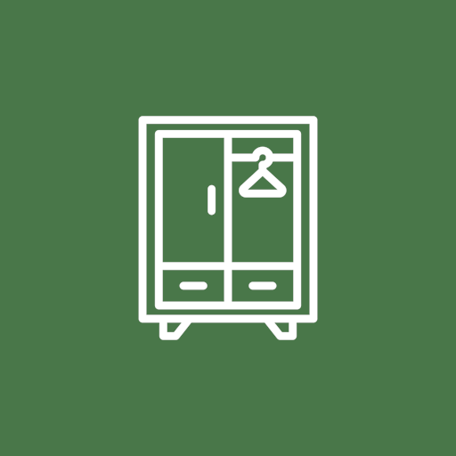
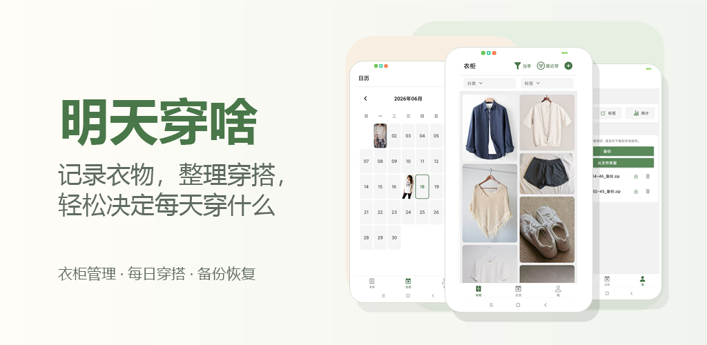

衣物管理
添加、编辑和删除衣物，记录图片、名称、购买日期、穿着次数和上次穿着日期。

明天穿啥
主要功能
添加、编辑和删除衣物，记录图片、名称、购买日期、穿着次数和上次穿着日期。
自定义分类和标签，按季节、场景、颜色或状态快速筛选衣物。
按日期保存每日穿搭照片，回看近期搭配，也能避免同一套穿得太频繁。
将衣物数据和图片导出为备份文件，并在需要时从文件恢复。
隐私友好
应用会在你主动选择时访问相机、照片或文件，用于添加衣物、记录穿搭、备份和恢复数据。我们不会出售你的个人数据，也不会在未经你主动操作的情况下分享你的衣物照片。
下载
通过 Google Play 测试链接安装应用，提前体验明天穿啥的衣柜管理、穿搭记录和备份恢复功能。